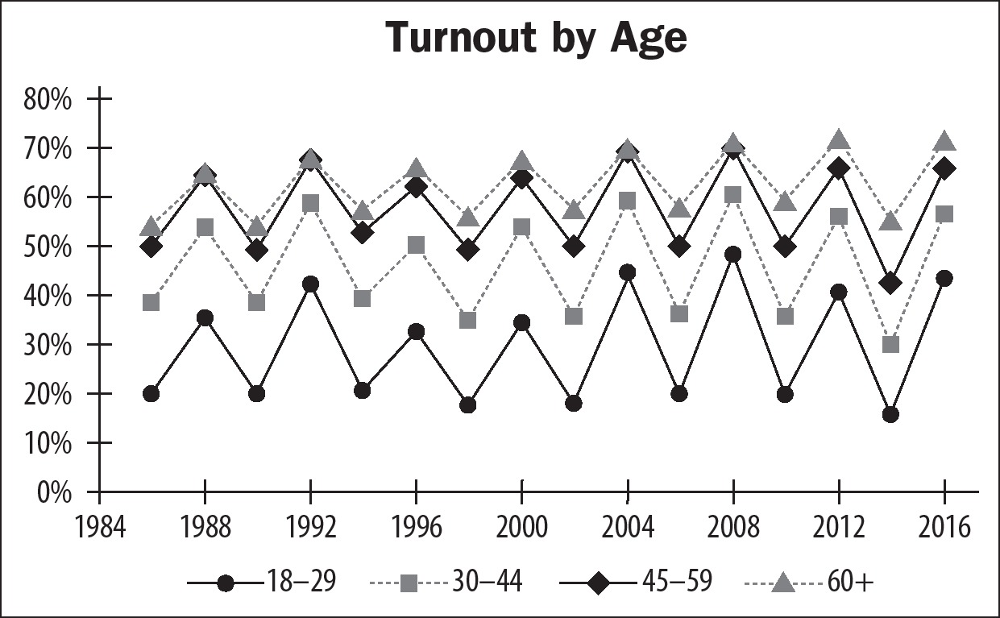

Chapter 21
Mastering the Free-Response Questions
A.SCORING
1.Your score on the free-response questions (or FRQ) section of the exam is based on responding to four questions. Each of the four free-response questions is equally weighted and will comprise 50% of your total score. You will have one hour and 40 minutes to complete your responses to all of the FRQ questions.
2.The free-response questions will require you to make connections between topics across the course and draw conclusions about these connections and how they apply to specific situations.
3.Below is a chart showing the breakdown of the FRQ section of the exam.
| Free-Response Question Type | Suggested Time Limit | Percentage of Overall Exam Score |
| Concept Application | 20 minutes | 12.5% |
| Quantitative Analysis | 20 minutes | 12.5% |
| SCOTUS Comparison | 20 minutes | 12.5% |
| Argument Essay | 40 minutes | 12.5% |
B.TOP TIPS FOR THE FREE-RESPONSE QUESTIONS
1.The most important tip for answering free-response questions is to carefully read the question and be sure you understand what the question is asking. In other words, RTFQ (Read The Full Question).
2.In reading the question carefully you should underline, draw boxes around words, make notes—whatever helps you understand the question correctly or organize helpful information. Take a few minutes to create a plan before you begin writing your answer to the question.
3.Send in a “reserve player” (an extra answer that may be able to score the point).
➤On free-response questions, you may be asked to identify or explain one or more examples, similarities, or differences. In such cases, it is recommended that you include an extra idea that may earn the point in case one of your required responses is wrong. This offers you protection because, if one of your examples is incomplete or inaccurate, you might be able to score the point with your second option.
➤For example, if the prompt asks you to describe one power of Congress, describe two. Even if you are confident in your original answer, take a moment to call in a reserve player!
4.Time management is essential, so take into account the suggested pacing for each question and allow more time for the argument essay free-response question.
➤The College Board recommends that you budget twenty minutes for each of the first three questions and forty minutes for the last question. Because the last free-response question, the argument essay, is the most complex it is recommended that you allow yourself additional time on that question.
➤Remember you are free to move between the free-response questions at any time. So, if you finish one question early, you may move ahead to the next question. If you have any time left at the end, you should go back and review your answers and add in “reserve players” if you have any.
5.Order and spacing should reflect the format of the question. Answer the questions in order using complete sentences. Leave three to five blank lines of space between each part of your answer in case you need to add more to your response later. It will also make it easier for you to assess that you have answered all parts of the questions.
Sample Spacing
6.Remember to “close the loop.” Your answer must be relevant to the prompt, so it helps to begin your response to each section of the question with the specific wording from the prompt. Also, after finishing your response to a section, be sure to indicate how you answered what was asked in the stimulus. For example, you might say, “and that explains how Congress uses the power of oversight to influence bureaucratic regulations.”
7.Answer questions using political science terminology. When describing the balance between state and federal power, use the term federalism or mention division of powers. When discussing a case in which the Supreme Court has overturned a law, use the term judicial review. Show the reader that you understand the technical language of the subject to be sure you earn every possible point.
8.Use specific examples of each important concept in your answer. Sometimes you may have a general idea of an answer, but may not be able to articulate it exactly.
➤If you are not sure of the name for a concept or can provide only a general description, an example may save the point.
➤For example, if the answer is the “oversight power of Congress” and you describe it without naming it, the reader may not be sure you are talking about oversight. If you give, as an example, Congressional hearings on enforcement of environmental regulations, your example makes clear that you are discussing oversight.
9.Answer questions in neutral terms. It’s great to have political opinions, but the AP® reader evaluating your answer may not share them. Avoid value judgments and expressions of personal political ideology, and answer in factual, straightforward language.
10.Be aware of what is being asked of you based on the verb used in each part of the question. Notate the verb in each question by drawing a box around it so that you are conscious of the directive. Some of the most commonly used verbs on the free-response questions and what they mean in terms of your response are provided in the chart below. Generally, you are expected to write a brief paragraph of three to five sentences in response to each of these prompts, with the exception of “identify” prompts, which typically require only one to two sentences to list and define.
| FRQ Verb | Expected Response |
| Identify | Provide a specific example of a political science concept using a complete sentence. This is a perfect place to add a “reserve player.” |
| Describe | Define, illustrate, and outline what is being asked about by providing specific details. These questions require you to depict a phenomenon or idea by illustrating its key characteristics. Remember to demonstrate your knowledge by utilizing political science terminology and be specific. |
| Explain | Address possible causal relationships by defining all relevant terms and making logical connections using specific examples. Make sure that you close the loop and indicate clear cause and effect relationships by using a “because” or “therefore” in your response. |
| Identify a Trend | A trend is a clear movement or tendency that can be seen in a data set. Trends are those things that can be identified using words that describe change or stability over time. For example, words like increase, decrease, grow, shrink, or stability. Trend questions relate to data sets. A single data point is not a trend! |
| Draw a Conclusion | This verb is most likely to show up when you are asked to examine data presented in a chart or graphic. Indicate the broader meaning or outcome of findings that can be determined based on the data. Consider why the results are important and how they illustrate political science concepts. |
| Compare (Similarities and Differences) | Clearly show the relationship between two concepts by highlighting similarities and differences. It helps if you can define each term first, but you must indicate how the concepts are alike and how they are different. Write about both concepts and cross-reference them. |
| Articulate a Claim | Expect to see this verb in the argument-essay FRQ where you will need to make a defensible statement or thesis using one to two sentences. A helpful format for this is to write an “I believe . . . . because” statement. “I believe that (choose a side or one of the options from the prompt) because (explain your reasoning which you will support with evidence in your response).” |
| Support | Provide specific evidence to prove the truth of a statement. |
| Use Reasoning | Make specific connections between the evidence you cite and your thesis by clearly explaining how each piece of evidence supports your claim. |
| Refutation or Rebuttal (Argument Essay) | Use reasoning to explain how evidence contradicts or disproves a claim. Make a clear comparison by stating your original claim with reasoning and indicating why your claim is superior to the counterclaim. |
| Concession (Argument Essay) | Use reasoning in admitting that an opposing viewpoint is correct based on an examination of evidence. Make a clear comparison by stating your original claim with reasoning and then indicating why the counterclaim is also correct or valid. |
The readers who will be evaluating your free-response questions are “gatherers,” not “hunters.” They will be glad to pick up the points that are apparent in your answer, but they will generally not chase them down.
C. THE FOUR TYPES OF FREE-RESPONSE QUESTIONS
Section II of the exam consists of four distinct types of free-response questions that are all weighted equally in terms of your overall exam score. The four types of questions are concept application, quantitative analysis, SCOTUS comparison, and argument essay.
1.Concept Application: In one of the FRQs you will be asked to evaluate a political scenario and indicate how it illustrates or explains political science concepts, public policy, government institutions, or political behavior. This style of free-response question will be worth three points (parts A, B, and C will each be worth one point) and it is suggested that you spend about 20 minutes on this question. The question prompt will begin with a provided scenario.
Part (A) will likely ask you to describe a political institution, behavior, or process connected with the scenario described. (1 point)
Part (B) will likely ask you to explain how your response in Part (A) affects or is affected by a political process, government entity, or citizen behavior as related to the scenario. (1 point)
Part (C) will likely ask you to explain how the scenario relates to a political institution, behavior, or process in the course. (1 point)
➤Each part of your answer should be a short paragraph of 3–5 sentences. Remember to leave several blank lines between each section.
➤Be sure to answer in context. For each part of the question, be sure to make clear how your answer relates to the scenario you are being asked to analyze.
SAMPLE CONCEPT APPLICATION QUESTION
1.The following is from a 2012 speech by President Barack Obama on immigration issues.
Good afternoon, everybody. This morning, Secretary Napolitano announced new actions my administration will take to mend our nation’s immigration policy, to make it more fair, more efficient and more just, specifically for certain young people sometimes called DREAMers.
Now, these are young people who study in our schools, they play in our neighborhoods, they’re friends with our kids, they pledge allegiance to our flag. They are Americans in their heart, in their minds, in every single way but one: on paper. They were brought to this country by their parents, sometimes even as infants, and often have no idea that they’re undocumented until they apply for a job or a driver’s license or a college scholarship.
Put yourself in their shoes. Imagine you’ve done everything right your entire life, studied hard, worked hard, maybe even graduated at the top of your class, only to suddenly face the threat of deportation to a country that you know nothing about, with a language that you may not even speak.
President Barack Obama, June 15, 2012
After reading the scenario, respond to parts A, B, and C below:
(A)Describe a power the president could use to address the concerns outlined in the scenario.
(B)In the context of the scenario, explain how the use of executive power described in Part A can be affected by its interaction with Congress.
(C)In the context of the scenario, explain how the interaction between Congress and the presidency can be affected by the judicial system.
SCORING GUIDELINES—CONCEPT APPLICATION QUESTION
PART A POSSIBLE POINTS
Clearly describe one of the following as a power the president could use in this situation.
➤Issue an executive order to create a system under which DREAMers could legally remain in the United States.
➤Recommend legislation urging Congress to create an amnesty program for DREAMers.
➤Use the power to execute the law to selectively enforce existing deportation requirements.
➤Use the president’s informal powers and media access to persuade the public to pressure Congress to take action (bully pulpit).
PART B POSSIBLE POINTS
Clearly explain, in the context of the scenario, how the use of executive power described in Part A can be affected by its interaction with Congress.
➤If the president issues an executive order creating a system under which DREAMers could legally remain in the United States, Congress could pass a law that either strengthens or eliminates the policy.
➤If the president recommends legislation to create an amnesty program for DREAMers, Congress can pass a law that specifically addresses this policy issue and provides funding for its implementation.
➤If the president uses the “executing the law” power to limit enforcement of existing deportation requirements, Congress can pass stricter laws with more specific requirements or use the oversight power to investigate.
➤If the president uses the informal power of the president to appeal to the people to pressure Congress to take action (bully pulpit), members of Congress may feel pressure from their constituents to pass laws related to DREAMers or to hold hearings and investigate the issue using the oversight power.
PART C POSSIBLE POINTS
Clearly explain in the context of the scenario how the interaction between Congress and the presidency can be affected by the judicial system.
➤If the president issues an executive order creating a system under which DREAMers could legally remain in the United States, the courts could potentially strike down or uphold the action using the power of judicial review.
➤If the president recommends and Congress passes legislation to create an amnesty program for DREAMers, the courts could strike down or uphold the law.
2.Quantitative Analysis: In this type of free-response question, you will be required to identify a trend or pattern or make a conclusion from a specific data set. Additionally, parts of this question will require you to relate the data to a specific political science principle or process, institution of government, linkage institution, public policy, or political behavior. This style of free-response question will be worth four points, typically having parts A, B, C, and D. It is suggested that you spend about 20 minutes on this question.
Part (A) will likely ask you to identify or describe the data in the quantitative visual. (1 point)
Part (B) will likely ask you to describe a pattern, trend, or similarity/ difference as prompted in the question. (1 point)
Part (C) will likely ask you to draw a conclusion and explain how the pattern, trend, or similarity/difference in the data supports your conclusion.
Part (D) will likely ask you to explain how specific data in the quantitative visual demonstrates a political principle, institution, process, policy, or behavior. (1 point)
➤Write a brief paragraph in response to each part of the question and leave several blank lines between each section. Identification questions may require a shorter response.
➤Read the title, headings, legend or key, and any notes or descriptions provided to help you interpret the data.
➤Quantitative data may be presented in a variety of ways. Carefully examine the format of the graphic to be sure you understand the relationships between data categories.
➤Do not confuse trends with data points. Trends show changes or consistencies over time, while data points represent individual pieces of information. Simply pointing out specific data points does not show a trend.
➤Be sure to use the data in the form it is given to you. For example, don’t confuse percentages with raw numbers. Be sure to label any numerical conclusions you draw according to the labels given in the data.
SAMPLE QUANTITATIVE ANALYSIS QUESTION

This chart is taken from the United States Election Project (electproject.org).
2.Use the information in the graphic to answer the following questions.
(A)Identify a pattern in voter turnout related to age.
(B)Describe a trend in voter turnout relative to presidential and midterm election years.
(C)Explain a possible reason for the trend in voter turnout in presidential and midterm election years.
(D)Explain how the trend in voter turnout relative to presidential and midterm election years impacts policymaking interactions between the president and Congress.
SCORING GUIDELINES—QUANTITATIVE ANALYSIS QUESTION
PART A POSSIBLE POINTS: Identify a pattern.
➤Voting participation increases as people age.
➤Younger people vote at lower rates than older people.
PART B POSSIBLE POINTS: Describe a trend.
➤Voter turnout increases in presidential election years and decreases in midterm election years.
➤Voter turnout increased in every presidential election and decreased in every midterm election relative to the previous election.
PART C POSSIBLE POINTS: Explain a possible reason.
➤Presidential elections motivate voters more than midterm elections because the Office of the President has a higher profile than those of lower level politicians, and people care more about voting for this office.
➤Considerably more money is spent by presidential campaigns than other types of campaigns. As a result, voters are more informed and motivated in presidential election years than in midterm election years.
➤Presidential elections generate more media coverage than midterm elections, which leads to greater voter interest and turnout.
PART D POSSIBLE POINTS: Explain how the trend affects policymaking interactions.
➤Gridlock tends to increase following midterm elections, since the president’s party almost always loses seats in the midterm.
➤The president may be more able to claim a mandate as a result of the higher turnout associated with presidential elections and may consequently hold an advantage in public perception.
➤The honeymoon period following presidential elections in which a president is elected to his or her first term gives the president leverage over Congress during the policymaking process.
3.SCOTUS (Supreme Court of the United States) Comparison:
This free-response question will involve explaining how aspects of one of the fifteen required Supreme Court cases is relevant to another, non-required Supreme Court case. This style of free-response question will be worth four points (typically parts A, B, and C) in which part B is worth two points. It is suggested that you spend about 20 minutes on this question.
Part (A) will likely ask you to identify a similarity or difference between the two Supreme Court cases, as specified in the question. (1 point)
Part (B) will likely ask you to provide factual information from the specified required Supreme Court case (1 point) and explain how or why that information is relevant to the non-required Supreme Court case described in the question. (1 point) Note: Part B is typically worth 2 points.
Part (C) will likely ask you to describe or explain an interaction between the holding in the non-required Supreme Court case and a relevant political institution, behavior, or process. (1 point)
➤Write a brief paragraph in response to each part of the question and leave several blank lines between each section.
➤When identifying similarities or differences, focus on constitutional clauses or principles, such as freedom of religion or due process.
➤Don’t just name the constitutional clause or principle—explain or describe it.
➤Be sure to know your fifteen required cases—the facts, constitutional issue(s), holding(s) and reasoning. You will always be asked to relate a required case to a non-required case.
➤Cases that have the same legal outcome are often based on similar factual scenarios.
➤When cases based on similar factual situations have different legal outcomes, there are two possibilities. First, the Court may have overturned precedent (which will have been pointed out to you, because it is a big deal). More often, there is a factual difference that distinguishes one case from the other and leads to a different legal outcome.
SAMPLE SCOTUS COMPARISON QUESTION
3.In 1996, California voters passed a referendum legalizing the use of marijuana for medical purposes. The possession and use of marijuana remained illegal under the federal Controlled Substances Act. Angel Raich and Diane Monson were California residents who produced and used marijuana to treat their own serious medical conditions. In the case of Gonzales v. Raich (2005), they sued the Attorney General of the United States and the head of the Drug Enforcement Administration, demanding that federal agents refrain from enforcing federal marijuana law against them in the state of California.
Gonzales required a determination of whether states or the federal government had constitutional authority to regulate the medical use of marijuana. The question presented was whether Congress’s power to regulate interstate markets for medicinal substances includes the power to regulate drugs that are produced and consumed locally. The Court held that:
the diversion of homegrown marijuana tends to frustrate the federal interest in eliminating commercial transactions in the interstate market in their entirety. [T]he regulation is squarely within Congress’s commerce power because production of the commodity meant for home consumption . . . has a substantial effect on supply and demand in the national market for that commodity.
Based on the information above, respond to the following questions.
(A)Identify the congressional power upon which the Court based its rulings in both Lopez v. United States (1995) and Gonzales v. Raich (2005).
(B)Explain how the facts of United States v. Lopez and Gonzales v. Raich led to different outcomes.
(C)Describe an action that Congress could take to respond to the holding in Gonzales v. Raich if it disagreed with the decision.
SCORING GUIDELINES—SCOTUS COMPARISON QUESTION
PART A POSSIBLE POINTS
➤Both the Lopez and Gonzales holdings are based on the commerce power or the authority of Congress to regulate interstate trade.
PART B POSSIBLE POINTS
➤Clearly state the facts of Lopez to ensure you earn the point for this requirement.
Alfonso Lopez, a twelfth grade student, was arrested for carrying a gun into his high school. He was charged with violating the federal Gun Free School Zones Act of 1990, which prohibited possession of a gun in a school zone. Lopez appealed, arguing that regulation of guns in school zones was a state matter and not within the scope of Congress’s commerce power.
➤Clearly explain how the facts in these cases led to different outcomes.
Both Lopez and Gonzales centered on the limits of Congress’s commerce power. In Lopez, the Court struck down the Gun-Free School Zones Act of 1990, holding that the commerce power could only be exercised to regulate economic or interstate activity. Because possessing a gun in a school zone was neither an economic activity nor related to interstate commerce, the federal government could not make it a federal crime. However, in Gonzales, the Court held that federal regulation of marijuana production was a legitimate exercise of the commerce power because it is an economic activity that affects interstate commerce.
PART C POSSIBLE POINTS
➤Congress could decriminalize or legalize medical marijuana by passing a federal law.
➤Congress could amend or change the Controlled Substances Act to exempt states that have decriminalized medical marijuana from enforcement.
➤Congress could propose a constitutional amendment with a two-thirds vote of both chambers to legalize marijuana or to allow states the discretion to regulate marijuana.
➤Congress can refuse to fund enforcement agencies, or refuse to confirm justices who oppose expansive states rights and individual liberties (particularly on drug or commerce issues).
4.Argument Essay: The final free-response question involves forming a well-reasoned argument that is supported by evidence from one of the nine foundational documents as well as addressing an alternative perspective. This free-response question will be worth six points, and because it involves more sophisticated thinking, it is suggested that you allow about 40 minutes to answer this question. However, it still carries the same weight in your overall exam score as the first three FRQs. The argument essay has four main sections: claim, evidence, reasoning, and a response to an alternative perspective. Remember to leave several blank lines between each section.
CLAIM/THESIS SECTION (1 point)
This part of the question will ask you to articulate a defensible claim or thesis that responds to the question and establishes a line of reasoning (1 point). In order to ensure that you can earn all of the later points make sure that you establish a line of reasoning and do not merely repeat the prompt.
➤To earn the thesis/claim point, you must take a position, so begin with a straightforward statement of your position and explain why you believe it is correct. Your thesis must state a causal relationship. You must pick a side. Two possible forms this statement could take are:
“I believe . . . because . . . ”
“The argument that . . . is true because . . . ”
➤Be sure your thesis responds to the question that is being asked (RTFQ).
EVIDENCE SECTION (3 points)
This part of the question will likely ask you to support your claim by describing two pieces of evidence that are accurately linked to the topic of the question (2 points). Clearly use each piece of evidence to support your argument (1 point). Note that the evidence section is worth a total of 3 points.
➤The evidence you cite must logically relate to your thesis statement.
➤You will likely be expected to draw on your understanding of the required foundational documents to defend your argument. The Constitution, including the Bill of Rights, is the most likely document to be encountered and/or useful.
REASONING SECTION (1 point)
This part of the question will likely ask you to explain how or why the evidence supports the claim or thesis. (1 point)
➤Clearly and explicitly make connections to explain how the pieces of evidence you have presented support your argument.
RESPONSE TO ALTERNATIVE PERSPECTIVES SECTION (1 point)
This part of the question will likely ask you to respond to an opposing or alternate perspective, using refutation, concession, or rebuttal, that is consistent with the argument. (1 point)
➤Be sure to state and respond to an opposing viewpoint by refuting, conceding, or rebutting.
➤In your response to an alternative perspective, be sure to “close the loop” by restating your claim and reasoning and indicating how it is either superior to a counterclaim or how the counterclaim is also valid.
SAMPLE ARGUMENT ESSAY QUESTION
Congressional effectiveness is influenced by several factors, including the different views of the role of a member of Congress. Various roles for a member of Congress, i.e., “trustee,” “delegate,” or “politico” are related to a congressman’s accountability to constituents.
Present an argument about which role best achieves the goal of constituent accountability, or the duty of elected officials to act in the best interest of the citizens they represent.
Use at least one piece of evidence from one of the following foundational documents:
•The Constitution
•Brutus No. 1
•Federalist No. 51
In your essay, you must:
•Articulate a defensible claim or thesis that responds to the prompt and establishes a line of reasoning.
•Support your claim with at least TWO pieces of accurate and relevant information.
– One piece of evidence must come from one of the foundational documents listed above.
– A second piece of evidence can come from any other foundational document not used as your first piece of evidence, or it may be from your knowledge of course concepts.
•Use reasoning to explain why your evidence supports your claim or thesis.
•Respond to an opposing or alternate perspective using refutation, concession, or rebuttal.
SCORING GUIDELINES—ARGUMENT ESSAY QUESTION
CLAIM/THESIS SECTION POSSIBLE POINTS
➤The delegate model best achieves congressional accountability to constituents because, in a representative democracy, elected officials are chosen to vote on behalf of those they represent and, in this case, the member of Congress would vote along with the wishes of the majority of their constituents.
➤I believe the trustee model is the best way for members of Congress to act in the best interest of those they represent. Voting based on conscience is effective because politicians have greater access to information about issues than the people they represent and can therefore make more informed decisions.
➤The politico model best achieves the goal of congressional accountability to constituents because it combines both the preferences of the professional legislators and the preferences of the members of their district/state, allowing them to make the most informed decisions for the citizens they represent.
EVIDENCE SECTION POSSIBLE POINTS
➤By placing responsibility for selecting senators in the hands of state legislatures, the original Constitution supported the argument that the trustee model of representation is superior. Legislators are likely to be more sophisticated than lay people, and are therefore in a better position to make informed choices on important issues.
➤The delegate model, by emphasizing the responsibility of elected officials to act in accordance with the will of their constituents, is supported by Brutus No. 1, in which it is argued that power should be dispersed and concentrated in lower levels of government, where voters hold more power.
REASONING SECTION POSSIBLE POINTS
➤The delegate model is best because, in a democracy, policy choices must be informed primarily by the will of the voters. The Constitution’s scheme of electing Representatives based on popular vote for two-year terms reflects the Framers’ belief in the delegate model. Representatives who fail to act on the preferences of their voters may be replaced at the ballot box.
➤The politico model is best because it allows elected officials to rely on their own expertise while ensuring that the will of the voters is considered. The importance of voter preferences in making political decisions is seen in the Constitution’s scheme of House elections, as well as in Brutus No. 1’s argument in favor of local control of government. The value of expertise and information is stressed in the Electoral College, as well as in the original constitutional provision placing responsibility for selection of senators with state legislatures.
RESPONSE TO ALTERNATIVE PERSPECTIVES SECTION POSSIBLE POINTS
➤Some may say that the trustee model is the best method for optimizing constituent accountability because, when representatives vote in this manner, they are using their expertise and are more informed than the public. However, the trustee model is flawed because it is not consistent with a representative democracy, in which elected officials should represent the will of their constituents, as they do in the delegate model.
➤The delegate model is the best method for achieving constituent accountability because in a democracy elected officials should vote according to the wishes of those they represent. Those who suggest that the politico model is best have a valid point because they argue that representatives should vote according to the majority of their constituents in most cases (delegate), but that they may at times need to vote based on their conscience based on greater access to information or to do what is best for the nation as opposed to his or her district only (trustee). The politico model thus may be superior to the delegate model because it offers more flexibility for representatives who, either way, may be voted out of office if the constituents do not agree with their decisions.